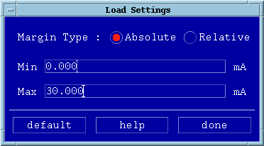

Load
- Select Loads in the Settings pulldown menu. A
screen similar to that of the figure below appears.

- Set up your margin settings as appropriate, and click done when
finished.
See also the section Example: Absolute and Relative Settings.